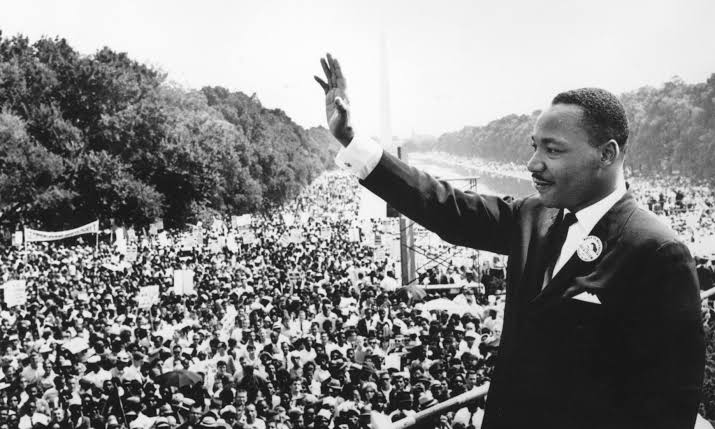

An American baptist and activist

American Baptist and Activist who became the most visible spokesman and leader in the civil rights movement from 1955 until his assassination in 1968. King advanced civil rights for people of color in the united states through nonviolence and civil disobedience, inspired by his christian beliefs and the nonviolent activism of Mahatma Gandhi.
Timeline of Martin Lurther King Jr.
- 1929- Martin lurther King Jr was born in Atlnta Georgia.
- 1953- Married his wife Cortta Scott.
- 1964- won noble prize award.
- 1968- died in Memphis Tennessee, U.S.
- 1977- posthumous award of presidental medal of freedom.
- 2004- posthumous awards f congressional gold medal.